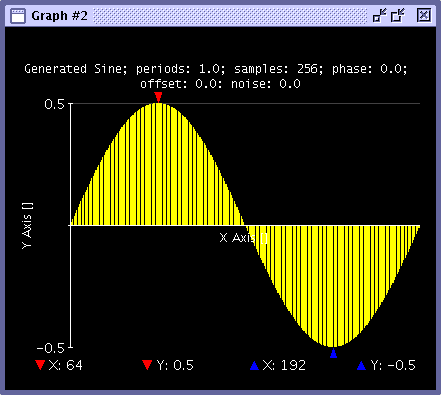

Change Graph Style
The Waveform Graphs Tool (WGT) allows you to select from normal or bar graph styles. These styles are selectable via the Format Dialog Box or the Data Display API. The following shows a bar graph style.

The Waveform Graphs Tool (WGT) allows you to select from normal or bar graph styles. These styles are selectable via the Format Dialog Box or the Data Display API. The following shows a bar graph style.
